| Write the first page | ||
|---|---|---|
| | |
| Set up SQL Service | Add a search form | |
A typical Eclipse Scout application consists of multiple outlines. Think of it as a folder hierarchy. Each "folder" is called a page. These pages come with nodes (a list of child pages) or with a table (a table filled with rows of data from a data source such as a database). The table has named columns. We need to create models for all of these.
If we want to fill the tables with data, we need to create a service on the server side. This service will get data from the database and return tabular data: data arranged in rows and columns which we can use to fill the tables we created on the client side.
Once we have all that we're ready to add a search form to our application.
When we talk about outlines and pages, think of a simple application. In this tutorial we're creating a miniature CRM. Here's what it may look like, using the Eclipse Scout terminology:
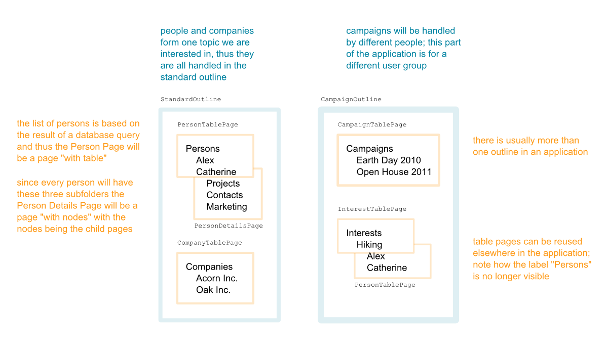
If you look at the diagram above, there are some interesting things to note.
In this tutorial, our first page will be the company table page. The standard outline is a prerequisite, so we'll start there.
All of these structures are strictly client-side structures. The server couldn't care less about how the various services it provides will get used. The only thing we need on the server side is a service that returns tabular company data.
Add a new page to your StandardOutline. Right-click on the Child Pages node of your StandardOutline and then choose New Page....
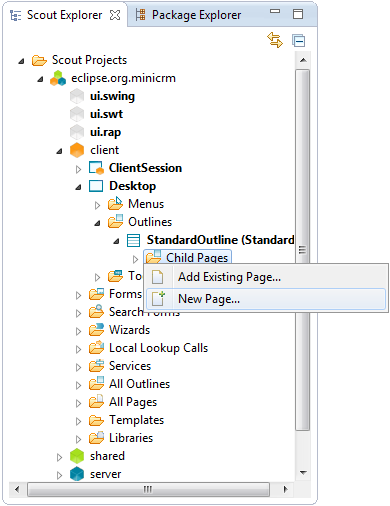
From the dropdown list choose AbstractPageWithTable, then click next.
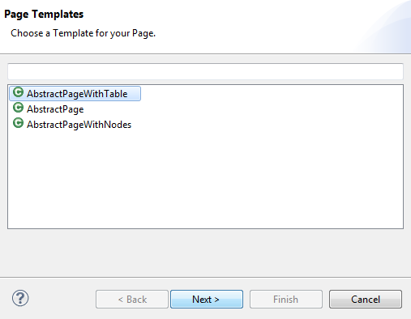
Now enter the name for the new table page: Company.
If there is no appropriate multilingual text, pick New translated text... from the list and provide a key and a default translation.
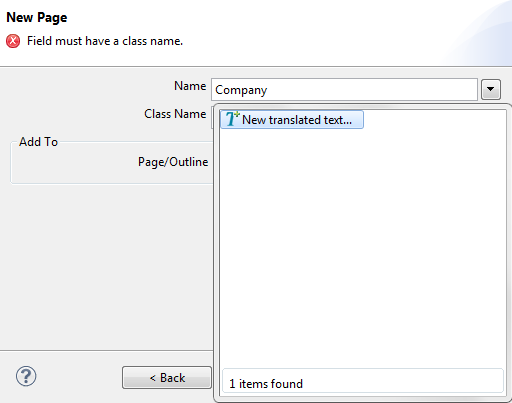
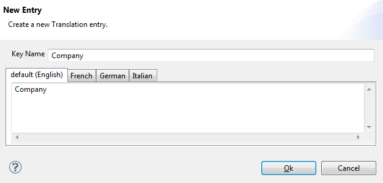
Eclipse Scout also comes with an editor to edit all the property files for multilingual texts in one go. If you expand the shared node in your Eclipse Scout project, expand Text Provider Services and click on DefaultTextProviderService. Click the link in the Scout Object properties view.
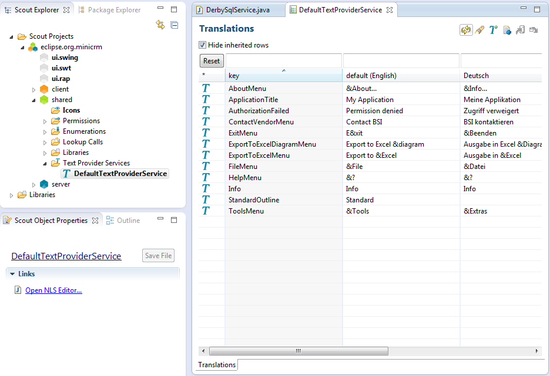
Back to the CompanyTablePage example: pick Company from the list (create a new translated text if you haven't done so already) and click Finish.
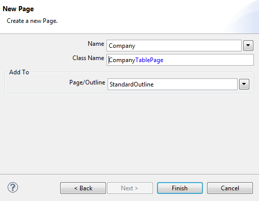
When you now expand the Child Pages folder below your StandardOutline, you'll find the new CompanyTablePage. When you expand the node Table, you'll find a folder Menus and Columns. Below Columns we will now add the columns that are needed to display the company data.
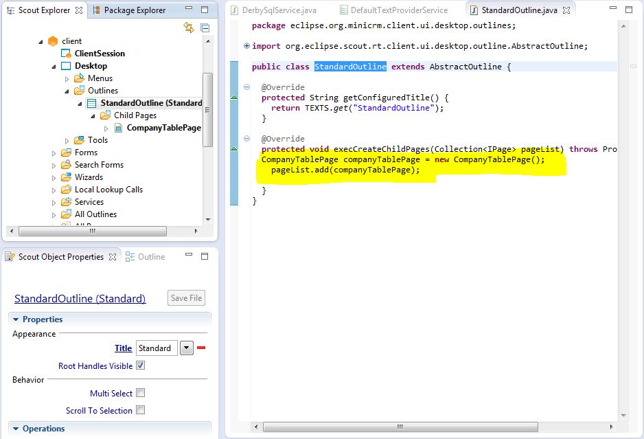
The next step is adding columns to the table. Add a column for the primary key (CompanyNrColumn), one for the company's short name (ShortNameColumn) and one for the company's name (NameColumn).
The context menu for creating a new table column is on the Columns node right below the page's table.
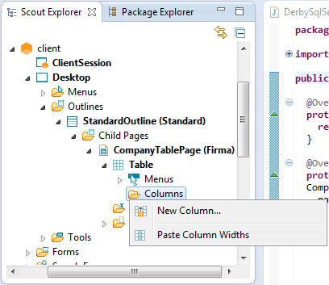
First you have to choose a template for your column. The template used depends on the data type of your data and the format you want to use when displaying it. Eclipse Scout will attempt to cast your data types appropriately.
Choose Long Column for the first column and String Column for the remaining columns.
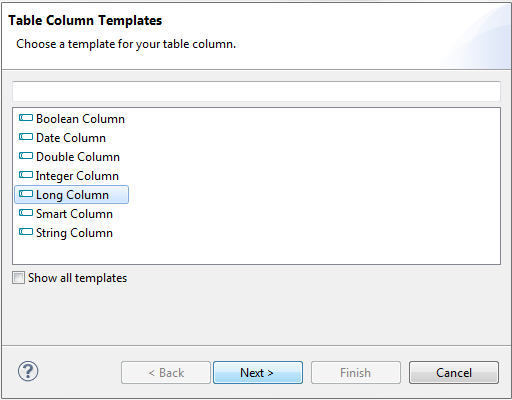
CompanyNrColumn is going to be an invisible column. Thus, it requires no name. Just provide the Type Name. The remaining columns get multilingual texts for their labels, just like everything else in an Eclipse Scout application.
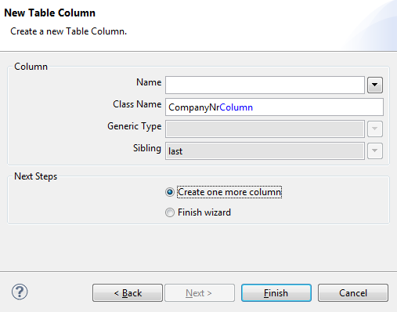
| Template | Name | TypeName | Width | Displayable |
|---|---|---|---|---|
| LongColumn | (none) | CompanyNrColumn | (irrelevant) | no |
| StringColumn | Short Name | ShortNameColumn | 200 | yes |
| StringColumn | Name | NameColumn | 200 | yes |
If you restart your client, you will see that the table layout is not optimal.
The column width could be improved. The table has a property called Auto resize columns and every column has a property called Width. You can either specify a higher width for all of your columns or you can tell your table to auto resize all columns. When auto resizing, the available width is shared by all columns.
If you're not sure, use a width of 200 for text columns.
| 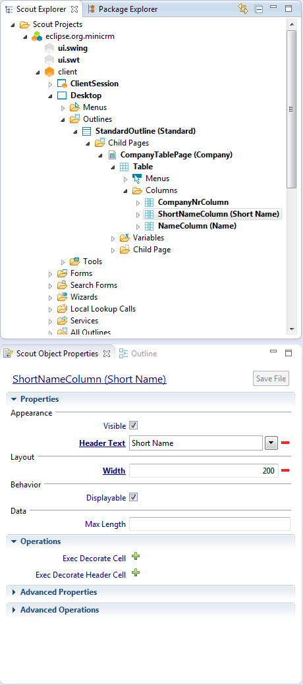 |
In addition to that, users are typically not interested in primary keys. You should hide CompanyNrColumn from the user.
You can do that by unticking the Visible property on the column. Users can make invisible columns visible, however. If you want to prevent this (and in this case you do), untick the Displayable property. To mark the column as a primary key you have to tick the Primary Key property.
Then it will look like this: 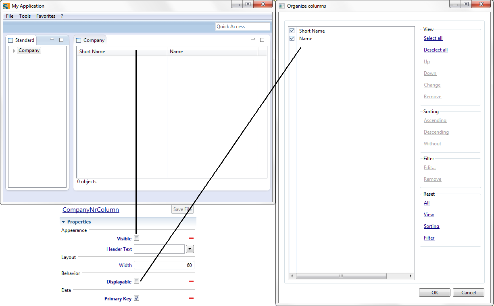
Note: There are only two columns
Sometimes invisible but displayable columns are used if a certain table is used like a report for slightly different target users. Some users are interested in a certain subset of columns, other users are interested in a different subset. Instead of preparing a customized table for every target user, you can provide a single table for all users with specialized columns being invisible but displayable. Every user can then configure the visibility of the particular extra columns they are interested in.
Now that we have our user interface, we need to think about flow: how does the data from the database get into our table?
Our table page has a method called execLoadTableData. We will override its default definition and call our outline service instead. In order to do this, we'll get a proxy from the service registry using the SERVICES object and the desired interface (IStandardOutlineService.class) as the key. We call the getCompanyTableData method on the proxy, it gets passed to the server, the method is called, the database is queried via the SQL object, the tabular data is returned to the proxy, it is returned to our function call, finally it will be used to populate the CompanyTablePage model. This in turn will be used to populate the user interface.
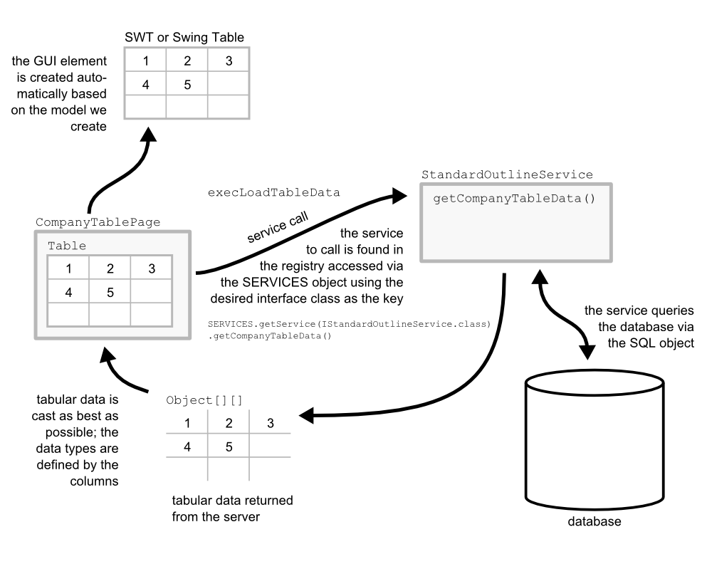
In order to fill the table in our CompanyTablePage we need to have a service available on the server side. This service will contact the database and retrieve the data we need on the client. The StandardOutlineService and the interface IStandardOutlineService has already been created.
Now we need to add a service operation to the service. To do so expand the node Outline Services and you'll see the StandardOutlineService. Right-click on it and choose New Service operation.
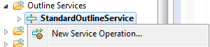
Choose getCompanyTableData as the name, and a two-dimensional object array Object[][] as the return type and click Finish. Now the operation will be added to the interface and the service itself.
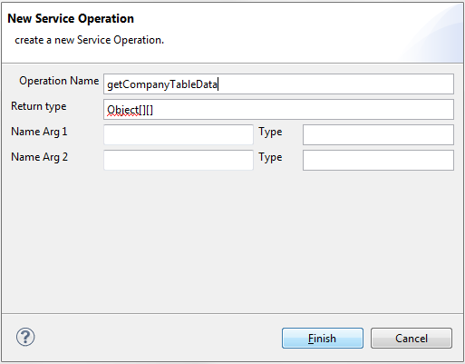
When naming service operations that provide tabular data for use in table pages, following the pattern getSomething'TableData' is a convention and considered good practice.
Open the implementation of getCompanyTableData either by expanding the node StandardOutlineService and double-clicking on getCompanyTableData or by opening the class StandardOutlineService directly (Ctrl-Shift-T) and scrolling down to getCompanyTableData. This is the place where we have to add an SQL statement which retrieves the data from the database.
The DB you've downloaded contains the following two tables:
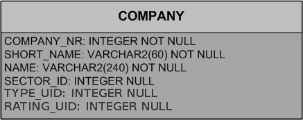
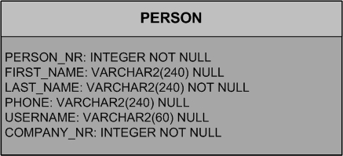
As described in the Scout Overview, Eclipse Scout provides a base service called SQL. In order to access the database and select data, just call SQL.select(...).
The first parameter to SQL.select is the SELECT statement.
public class StandardOutlineService extends AbstractService implements IStandardOutlineService {
public Object[][] getCompanyTableData() throws ProcessingException {
return SQL.select("" +
"SELECT COMPANY_NR," +
" SHORT_NAME," +
" NAME" +
" FROM COMPANY");
}
}
The optional, second parameter to SQL.select are the Bind Bases. They are needed if you need constraints (a WHERE clause with bind variables) in your SELECT statement. We have no need for them right now, since we're going to select all the companies.
The last thing to do now is to add the call to the getCompanyTableData service operation, for this we need to overwrite the method AbstractPageWithTable.execLoadTableData(SearchFilter). Go back to your CompanyTablePage, in the lower part of the properties view click on the + right to Exec Load Table Data in order to create this method in your table page.
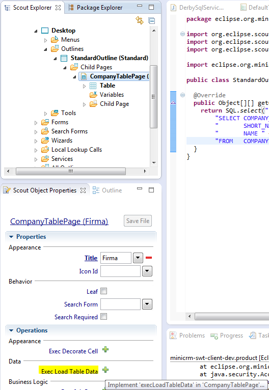
Now you can use the convenience accessor class SERVICES to find the required service using the IStandardOutlineService interface class and call getCompanyTableData to load the data in your TablePage.
@Override
protected Object[][] execLoadTableData(SearchFilter filter) throws ProcessingException {
return SERVICES.getService(IStandardOutlineService.class).getCompanyTableData();
}
Restart your application
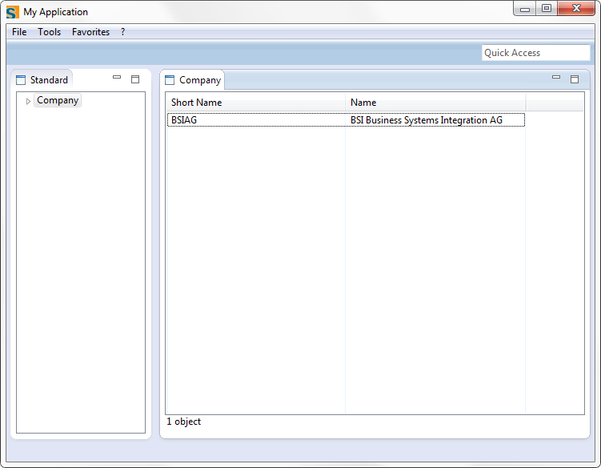
|  | |
| Set up SQL Service | Add a search form |